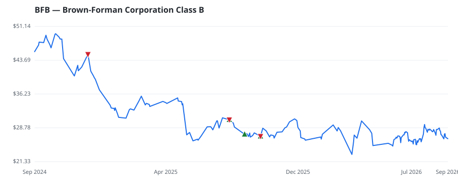

bullish · bearish · n/a — dots: price>SMA10 · SMA10>SMA50 · SMA50>SMA200 · up>down volume (20d)
Food, Beverage & Tobacco · large cap
Members who bought BFB earned a dollar-weighted -7.2% from their disclosure dates, versus +11.3% for the S&P 500 over the same holding windows (-18.5% alpha).

▲ green = a disclosed purchase · ▼ red = a disclosed sale (plotted on disclosure date)
Brown-Forman is a US-based manufacturer of premium distilled spirits. It generates over 70% of its revenue in the whiskey category, under well-known Tennessee whiskey brand Jack Daniel's and bourbon brands Woodford Reserve and Old Forester. It also manufactures and distributes tequila, vodka, rum, gin, and premium wines. The company generated 44% of fiscal 2025 sales from the US, while the bulk of international revenue comes from Europe, Australia, and Latin America. The Brown family controls over 50% of the economic interests and 67% of the voting power in the company. BEVERAGES · website
| Member | Chamber | Out-performer | Disclosed buys $ | Return on buys |
|---|---|---|---|---|
| Valerie Hoyle | house | — | $8K | -4.5% |
| Lisa McClain | house | — | $8K | -13.8% |
| Rohit Khanna | house | — | $8K | -3.4% |
Disclosed $ figures are bracket midpoints — filings report ranges (e.g. $1,001–$15,000), not exact amounts.